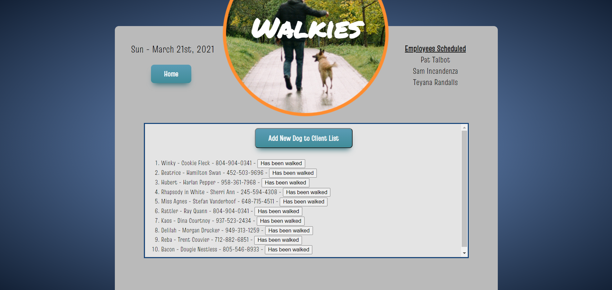
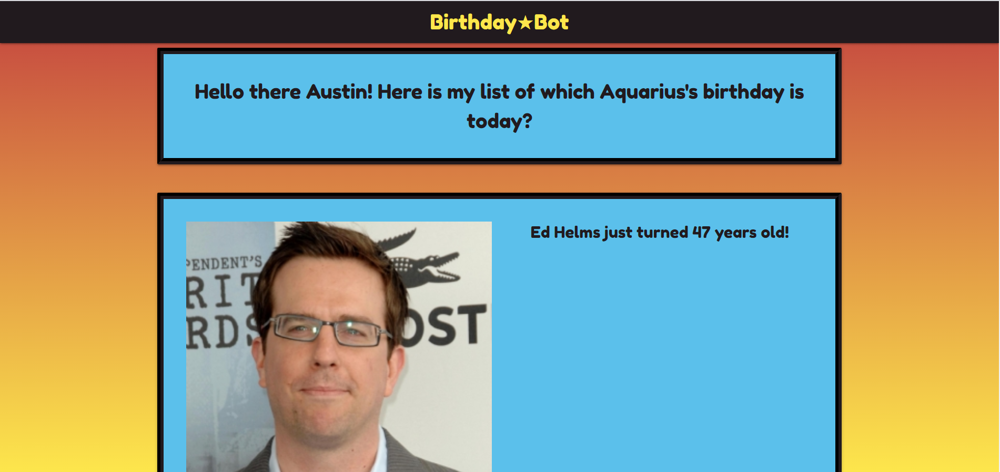

Walkies

My second group project harnessing the power of MySQL and Sequelize to give you a local dog-walking app.
Deployed Page:
https://sheltered-eyrie-89748.herokuapp.com/
Github:
https://github.com/awiehrs/walkies-test
Birthday Bot

My first group project harnessing the power of APIs to give you a personalized list of celebrity birthdays.
Deployed Page:
https://wtrickser.github.io/birthdayBot/
Github:
https://github.com/Wtrickser/birthdayBot
Eat-Da-Burger

A Burger-Eating app made using Node, Express, and MySQL
Deployed Page:
https://acruhf-burger-logger.herokuapp.com/
Github:
https://github.com/acruhf/burger-logger
Work Day Scheduler

For this assignment I made a workday hourly task list with a dynamically generated display with the ability to save list items in local storage.
Deployed Page:
https://acruhf.github.io/Work-Day-Planner/
Github:
https://github.com/acruhf/Work-Day-Planner
Timed Quiz

A timed multiple-choice quiz on the topic of Electric Guitars. This assignment was a test of applying various javascript concepts together including a timer, scoring system, and a leaderboard for saving scores into local storage
Deployed Page:
https://acruhf.github.io/Timed-Quiz/
Github:
https://github.com/acruhf/Timed-Quiz